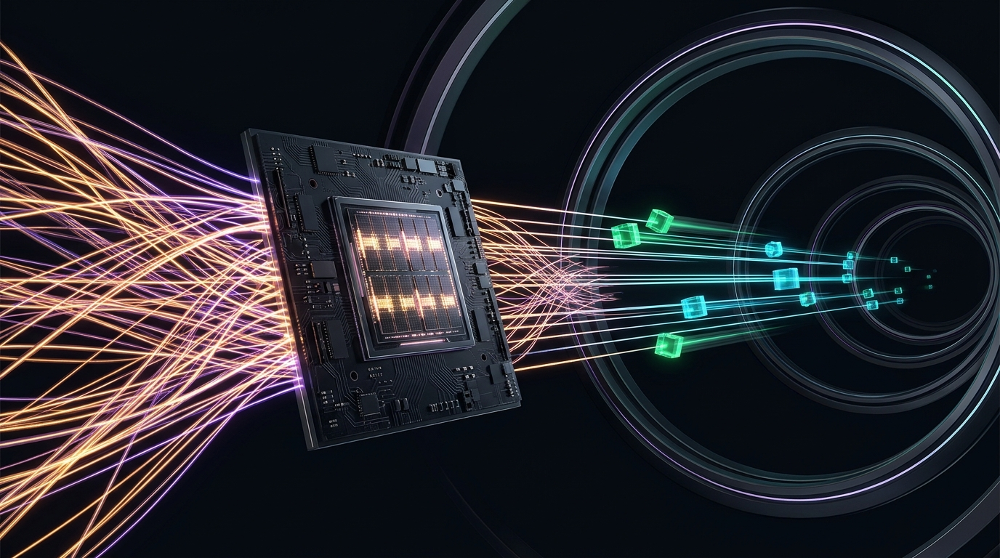

Inference 推理加速四板斧：如何把生成耗时从 3 分钟打到 5 秒？
视频生成最劝退的痛点就是「太慢、太贵」：一个 14B–30B 参数的原生 DiT 模型，如果直接用 BF16 裸跑 50 步，单张 H100 生成一条 5 秒 720p 视频要花 2–4 分钟，消费级显卡直接显存爆炸。这一章我们把工业界用来压榨硬件极限的推理加速四板斧（量化、稀疏注意力、特征缓存、多卡并行）一次拆解清楚，每一招都能叠 buff！

一、第一板斧：模型量化（BF16 → FP8 → INT8 → NVFP4）
说人话，量化就是把占地方、算得慢的 16 位浮点数（BF16），无损或微损地压成 8 位（FP8/INT8）甚至 4 位（INT4/NVFP4）。不仅显存直接砍半甚至砍到 1/4（让 14B 模型塞进单张消费级 RTX 4090/5090），在 Hopper (H100/H200) 和 Blackwell (B200/RTX 5090) 显卡上，FP8 / FP4 Tensor Core 的算力吞吐直接翻 2× 到 4×！
为什么视频 DiT 不能直接「无脑量化」？—— 离群值（Outliers）陷阱
和 LLM 一样，视频 DiT 线性层的激活值里藏着极少数比正常值大几十倍的「尖刺离群值（Outliers）」。如果直接对整个张量做暴力缩放量化，99% 的正常数值都会被压成 0，生成出来的视频瞬间糊成色块或者人物五官崩塌。
| 量化方案 | 显存节省 | 实际加速比 | 画质保真与工程实战要点 |
|---|---|---|---|
| FP8 (W8A8, E4M3) 当前工业界甜点 |
~50% | 1.5× – 1.8× | 动态范围大，几乎肉眼无损！关键技巧：首尾几层、时间步 AdaLN 调制层和 3D-VAE 保持 BF16，中间 DiT Linear 全切 FP8（Per-Token / Per-Block 动态缩放）。 |
| INT8 SmoothQuant | ~50% | 1.4× – 1.7× | 通过数学等价变换把激活的尖刺平滑转移一部分给权重，适合没有原生 FP8 Tensor Core 的老卡（如 A100 / 3090）。 |
| W4A4 / SVDQuant / NVFP4 (Blackwell 杀手锏) |
~70–75% | 2.2× – 3.0× | SVDQuant（Nunchaku）把离群值拆成一条极轻的 16-bit 低秩分支（LoRA 形式），主体全部压到 4-bit！配合 NVIDIA Blackwell 原生 NVFP4 微块缩放，4-bit 也能保持极高锐度！ |
二、第二板斧：稀疏注意力与量化注意力（干掉 O(N²) 大怪兽）
当视频拉长到 720p/1080p、5–10 秒时，Self-Attention 占比会飙升到总推理耗时的 65%–80%！好消息是，科学家把视频 DiT 的注意力热力图打印出来一看，乐了：超过 85%–90% 的注意力权重几乎都是 0！
为什么？因为第 3 秒画面左上角的一片云，根本不需要和第 1 秒右下角的一只鞋做深度语义交互——它主要只关心相邻帧的同一位置以及同一帧的周边区域！围绕这个发现，2025–2026 年爆发了一批神级加速算子：
⚡ SageAttention / SageAttention2 / 3
思路：不扔掉连接，而是直接对 Attention 内部的 Q·Kᵀ 矩阵乘做 INT8 / Per-Thread INT4 量化 + 离群值平滑（Smoothing Q/K），Softmax 后的 P·V 用 FP8/FP16。
效果：几乎完全即插即用（免重训），比 FlashAttention-2 快 2×–3×，画质损失几乎为零，已成为开源社区标配！
⚡ Radial Attention / STA / SpargeAttn / SLA
思路：真正跳过 80%–90% 无关块的算力！例如 Radial Attention 发现时空注意力随距离呈「径向衰减」，越远的帧只需极稀疏的采样；SpargeAttn / SLA 动态预测哪些 Q-K 块分数极低直接跳过，只算高价值块 + 低秩补全。
效果：视频越长加速越恐怖，长视频 Attention 提速 3×–8×，且可配合少量微调做到 90% 稀疏度几乎无损！
三、第三板斧：跨时间步特征缓存（TeaCache / TaylorSeer）
如果你把扩散模型去噪第 21 步、22 步、23 步的中间层输出拿来相减，会发现它们长得几乎一模一样！那为什么还要老老实实把 30 层 Transformer 重算一遍呢？
- TeaCache（Timestep Embedding-aware Cache）：盯着每一步变化后的时间步调制输入（Modulated Input）变化幅度看。如果发现当前步和上一步的变化小于阈值，直接跳过全部 30 层 DiT 计算，直接把上一步算好的残差特征复用过来！白嫖 1.5×–2.5× 免费加速，无需重新训练。
- First-Block Cache（FBCache）：更简单粗暴——只跑第 1 个 Transformer Block，看看输出变化大不大；如果变化很小，后面 29 个 Block 全部跳过！
- TaylorSeer（泰勒预测缓存）：比死板复用更聪明！既然前几步特征在平滑演化，直接用一阶/二阶泰勒展开预测当前步的特征趋势，在跳步比例高达 60%–70% 时画面依然不糊、运动不卡顿！
四、第四板斧：多卡并行与系统级编译（Ulysses / Ring / CFG Parallel）
如果业务要求「单条 10 秒 1080p 视频必须在 10 秒内吐出来」，单卡再怎么优化也有物理极限，这时候就要把一张大视频切给 4 张或 8 张 GPU 一起算：
- CFG Parallel（最零门槛）：正条件和负条件完全独立，直接分给 2 张卡并行算，几乎线性提速 1.9×（当然如果已经做了 CFG 蒸馏，这一步直接省了）。
- Ulysses Sequence Parallel（DeepSpeed-Ulysses）：把长视频序列切给 N 张卡，算完 QKV 后做一次
All-to-All通信，变成「每张卡拿全序列、但只算 1/N 个 Attention Head」，算完再All-to-All换回来。单机 NVLink 内极快！ - Ring Attention：卡间组成一个环，一边算当前块 Attention、一边异步把 KV 传给下一张卡，适合跨节点超长视频。现代工业界（如 xDiT / USP）通常把两者结合成 Unified Sequence Parallel (USP)：机内走 Ulysses、机间走 Ring！
- 系统级压榨：开启
torch.compile(mode="max-autotune")融合碎小算子（RoPE / LayerNorm / GeLU / AdaLN）、启用 CUDA Graph 消除 Python CPU 调度空泡，以及在显存吃紧的端侧设备做 Block-wise CPU Offload。
五、实战加速账本：把四板斧 + 第 6 章蒸馏叠在一起有多恐怖？
以典型 14B 视频大模型生成 5 秒 720p 视频（单卡 H100 基准）为例，看一步步叠加优化后的真实耗时变化：
| 优化组合阶段 | 有效前向次数 (NFE) | 单卡 H100 耗时 | 累计总加速比 |
|---|---|---|---|
| Baseline：BF16 + FlashAttn2 + 50 步 + CFG | 100 次 | ~185 秒 | 1.0× |
| + FP8 (W8A8) 线性层量化 + torch.compile | 100 次 | ~105 秒 | 1.8× |
| + SageAttention2 / Radial 稀疏注意力 | 100 次 | ~58 秒 | 3.2× |
| + DMD2 步数 & CFG 蒸馏（50 步 → 4 步，免 CFG） | 4 次 | ~3.2 秒（含 VAE 解码 ~4.8 秒） | ~38× 🚀 |
| + 2~4 卡 Ulysses 并行（针对 1080p/长片） | 4 次 | < 2.0 秒（准实时！） | > 90× |
注意上表最后两行：当 DiT 经过蒸馏和量化压到 3 秒时，3D-VAE 解码和 Text Encoder 编码耗时反而成了新的大头（常常占到 1.5–2 秒）！所以做推理优化一定要做 End-to-End Profiling（区分 Text Encode、DiT Denoise、VAE Decode），并且对 3D-VAE 也要做 FP16/BF16 + Tiled Compile 优化，千万别只盯着 DiT 猛卷而忘了 VAE！